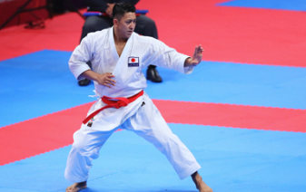

空手とは
概要
空手は琉球王朝時代の沖縄を発祥とする武術・格闘技。1920年代に沖縄から日本全国に伝えられ、第二次世界大戦後に世界に広まっていきました。 空手の競技には大きく分けて「形」と「組手」があります。 形は、仮想の敵に対する攻撃技と防御技を一連の流れとして組み合わせた演武。2019年1月からルールが改定され、7名の審判による採点で勝敗が決まります。予選は演武を1人ずつ行い、上位が決勝に進みます。決勝は同じく採点方式ですが、1対1の対戦形式で行われます。また演武する形は世界空手連盟（WKF）が認定している102種類から選択して行います。 組手は、8m四方の競技場で2人の選手が1対1で戦います。白い無地の空手着を着用し、一方の選手は赤帯、もう一方は青帯を締めます。攻撃の際に使える技は「突き」「蹴り」「打ち」の3種類。攻撃は相手の決められた部位に対して、良い姿勢で威力のある攻撃を行い、適切にコントロールされた技がポイントとなります。ポイントは、「有効」が中段への突き、上段への突きなどによるもので1ポイント、「技あり」は中段への蹴り、「1本」は上段への蹴り、倒した相手への突きなどが決まったときで3ポイントとなっています。攻撃部位の「上段」は頭部、顔面、頸部を指し、「中段」は腹部、胸部、脇腹などを示しています。 組手の「1本」は柔道とは異なり、その場で試合が終了するわけではありません。競技時間内に8ポイント差がついたとき、または男子、女子ともに3分の競技時間が終了した際にポイントの多い選手が勝者になります。この他には、棄権、反則、失格があった場合その相手選手を勝者とする、同点の場合は先にポイントを獲得（先取）していた選手が勝者となる、というルールがあり、勝敗の決め方はこの4種類になります。 反則は、コントロールせず故意に攻撃部位に当てる「過度の接触」、腕や脚、関節、股間、足の甲など「禁止部位への攻撃」、負傷を装ったり誇張したりすること、繰り返し場外へ出る、自己防衛ができない「無防備」、攻撃せず逃げる、頭部・肘・膝での攻撃、などがあります。
写真：アフロスポーツ
形
競技としての形は、空手の技の意味を正しく表現しています。見どころは、突きや蹴りの力強さやスピード、リズム、バランス、パワーなどでありますが、動きがブレないこと、キレと迫力があること、そして技の意味を正しく表した美しい流れがあることも評価のポイントになります。緩と急、強と弱、そして集中。仮想とはいえ敵と戦うことを前提とした演武であることから、相手を倒す意気込みが伝わってくるかどうかに注目してみましょう。トップ選手の演武にはドラマがあります。 演武である形は、仮想の相手に対する攻撃と防御で構成され、それが一連の流れとして組み立てられています。一度行った形は同じ試合では二度と使えないため、選手は予選から決勝まで勝ち上がっていくために4種類の形を身につけて臨みます。しかし、それぞれの選手には得手不得手があると同時に、自分が最も得意とする形を持っています。その決め手となる形を早い段階で使うか、決勝まで残しておくか、あるいは強い相手と当たる時に使うか、などが駆け引きとなります。早く使ってしまっては上位の選手との対戦では使えず、決勝まで使わずに温存しておこうとすると、それまでに負けてしまう可能性があります。その選手にとって全力で勝負すべき対戦が、必ずしも決勝ではないことがあるのです。形の種類を選択する選手の作戦・駆け引きに注目しましょう。
組手
組手の最大の見どころは、爆発的なエネルギーで繰り出される突きや蹴りが相手の目的部位を確実にとらえる、つまり攻撃が決まる瞬間です。技は目にも止まらぬスピードで繰り出されるので、その一瞬を見逃さないようにしたいところです。しかし、組手の魅力はその瞬間だけではありません。攻撃に至るまでの選手同士の駆け引きに注目しましょう。相手と対峙する際、互いに攻撃されない、あるいは攻撃されても防御できる位置取りを間合いといいますが、攻撃するには間合いに入って相手に近づかなくてはなりません。それは自分にとって攻撃できる位置であると同時に、相手から攻撃を受ける位置に入ってしまうことを意味します。間合いに入った瞬間、一気に試合が動き、矢のような速さで突きや蹴りが繰り出されるのです。決まる場合もあれば、防御され逆にカウンターを食らうこともあり、その瞬間を決して見逃してはなりません。一瞬たりとも目が離せないのが組手なのです。
※東京2020大会組織委員会 公式サイトより